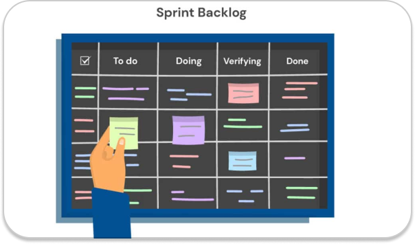

O product backlog é uma lista dinâmica de recursos, requisitos, melhorias e correções que devem ser concluídas para que o projeto seja bem-sucedido. Em essência, é a lista de tarefas da equipe, que constantemente é atualizada para se adaptar aos imprevistos ou as exigências do cliente.
As prioridades do projeto são agrupadas pelo Development Team (termo original em inglês para Time de Desenvolvimento) que definem aquilo que é chamado de Sprint Backlog na Sprint Planning Meeting, ou seja, um pacote de atividades que serão trabalhadas durante a Sprint.
O product backlog faz parte do framework de desenvolvimento Scrum, e é ligado diretamente ao Product Owner (PO), responsável por sua criação, conteúdo, disponibilidade e priorização. Sua função é documentar de forma clara todos os requisitos que vão surgindo durante o desenvolvimento de um projeto.